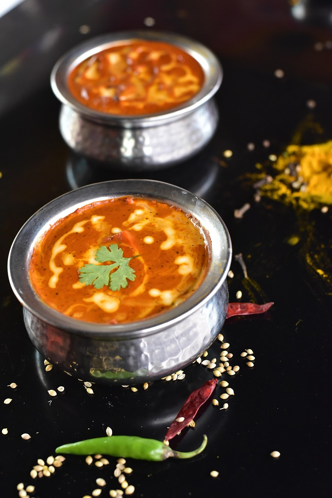

3d printing (or using any other cool machine to make stuff)

I've been 3d printing for over a decade now, and I love it's
versatility.
I design niche, useful items that solve problems in my daily life,
which allows me to save money.
I use both FDM and resin printers, depending on the use case.
I also use other machines, like laser cutters, CNC mills, lathes, and
a metal vaccuum cast system.
Cooking

I like good food and trying new recipes.
I've been cooking from a young age and attended culinary classes in
the past, so I can take a decent shot at making whatever dish i want
to try.
I even looked into pursuing it as a career, but decided I would not be
able to work the extended hours.
Programming
I have been programming as a hobby since I was a child.
While I never learned more advanced topics, I gained enough skill to
finish various hobby projects.
From smart home automation to game development, programming has served
as a useful tool for me to create whatever I want.